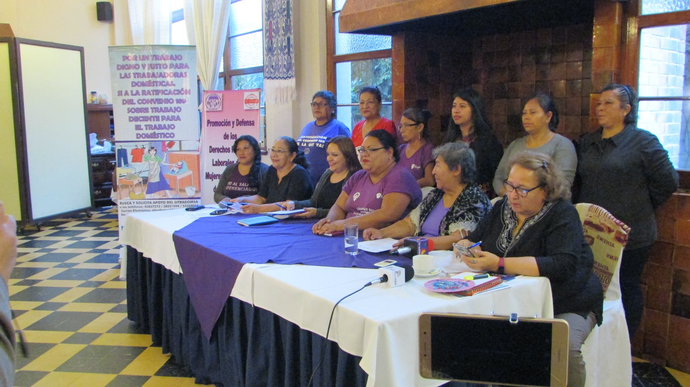
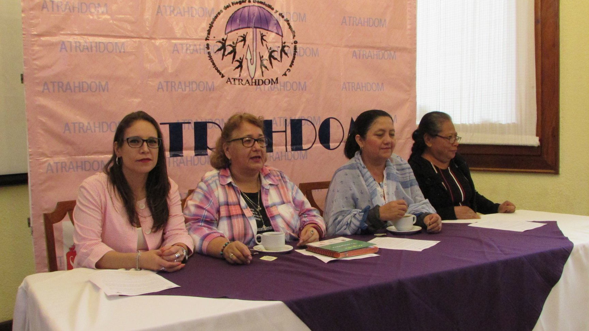
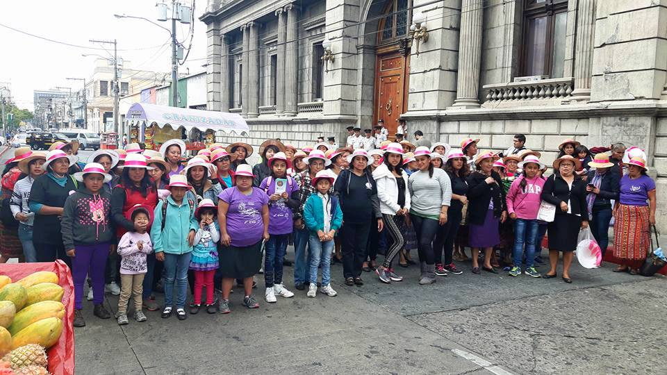

Ejes de Trabajo
Principales ejes Ejes Transversales Nuestra principal actividad organizativa es la Promoción y Defensa de los Derechos Humanos Laborales, esto lo llevamos a cabo por medio de…
Leer contenido completo →Defensa · Formación · Organización
Somos una organización de mujeres trabajadoras guatemaltecas dedicada a la formación, la defensa de los derechos humanos laborales y el acompañamiento jurídico de las trabajadoras del hogar, a domicilio y de maquila.
Qué hacemos
Promoción y defensa de los derechos humanos laborales, con acompañamiento jurídico.
Talleres, capacitaciones y materiales para conocer y exigir derechos.
Comunicados, campañas y propuestas de reforma a la legislación laboral.
Estudios, informes y el Centro de Documentación Digital completo.
Nuestra misión
La organización promueve la defensa de los derechos humanos laborales de las mujeres trabajadoras, su organización, formación e incidencia ante las instituciones públicas y la sociedad.
Centro de Documentación Digital
Contenido institucional

Principales ejes Ejes Transversales Nuestra principal actividad organizativa es la Promoción y Defensa de los Derechos Humanos Laborales, esto lo llevamos a cabo por medio de…
Leer contenido completo →
Agenda Política de las Mujeres en la Diversidad – APMD, Red Nacional y Mesoamericana de Defensoras de Derechos Humanos , Coordinadoras 8 de Marzo y 25 de noviembre Alianza estratégica…
Leer contenido completo →
Estructura organizativa ATRAHDOM se organiza en Asamblea compuesta por las miembras base de la organización a nivel nacional. Junta Directiva para el trabajo técnico/administrativo …
Leer contenido completo →Cargando el contenido de ATRAHDOM…